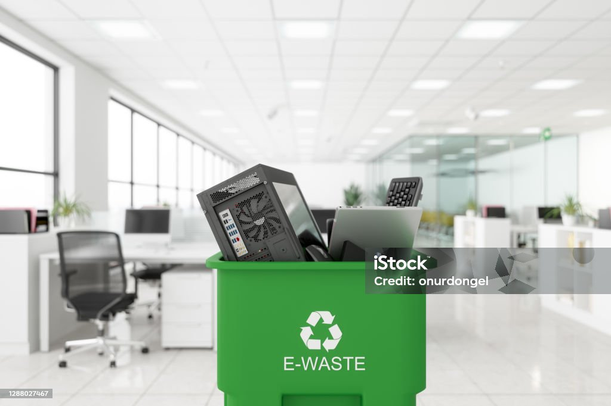
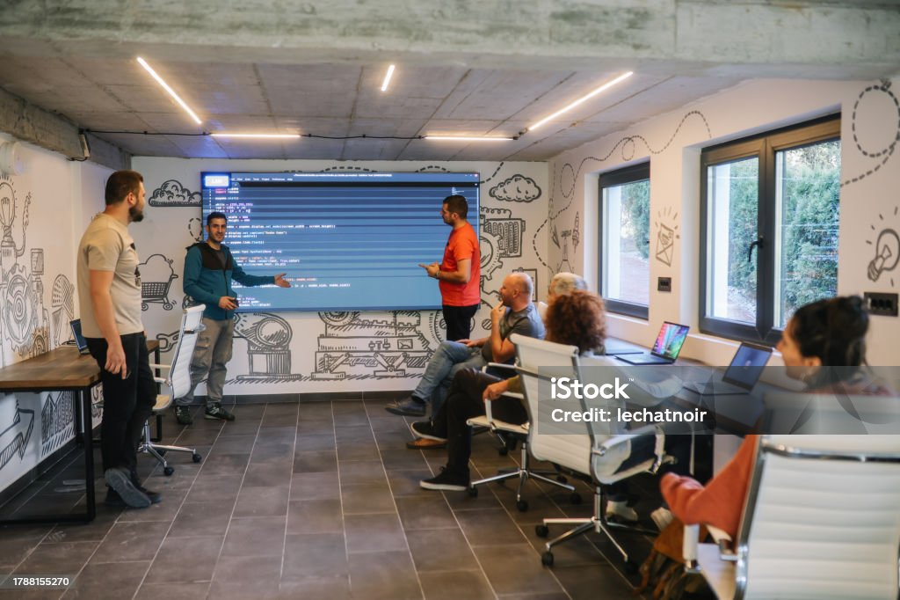

Choosing Repair Over Replacement
It is often quicker to replace a cracked phone screen or a broken kettle than to get it repaired, but that convenience comes at a cost. Every new device that gets manufactured uses raw materials, energy, and industrial capacity that a repair simply does not require. SDG 9 is about building industry that is efficient and sustainable, and one of the simplest ways students can support that is by choosing to fix things rather than throw them away.

A growing "right to repair" movement is pushing manufacturers to design products that are easier and cheaper to fix. As students, we don't get much say in how products are designed, but we do get a say in what we do when something of ours breaks.
| Replacing an Item | Repairing an Item |
|---|---|
| Uses new raw materials and manufacturing energy | Reuses materials already invested in the product |
| Old item usually ends up as waste | Keeps the item in use for longer |
| Supports large-scale mass production | Often supports a local repair shop or technician |
Where Broken Electronics Really End Up
Electronic waste is one of the fastest-growing waste types in the world. Phones, chargers, and small appliances contain metals and components that took real energy and effort to produce. When they're thrown in the regular bin instead of recycled properly, those materials are lost completely, and new ones have to be mined and manufactured all over again to replace them.

Most towns now have dedicated e-waste recycling points, often at supermarkets, electronics stores, or council recycling centres. Using them instead of the bin is a five-minute action that directly reduces the pressure on manufacturing industries to keep extracting new raw materials.
Buying From Local Makers and Repair Shops
Where we choose to spend money shapes what kind of industry gets to grow. Local makers, repair shops, and small manufacturers operate on a much smaller scale than large importers, and supporting them keeps skills, jobs, and innovation within the local community instead of relying entirely on mass production somewhere else.
Quick Tip:
Before buying something new online, try searching for a local maker, repair shop, or second-hand option first. It doesn't have to replace every purchase — even doing it occasionally makes a difference.
Backing Student-Led Innovation Projects
Universities are full of small-scale innovation: student projects, hackathon builds, and early-stage ideas that try to solve a real infrastructure or industry problem. Many of these never go anywhere, not because the idea is bad, but because nobody outside the project team ever hears about it or gets involved.

Supporting a project doesn't have to mean joining the team. Sharing it, giving feedback, volunteering an afternoon, or simply showing up to a demo day all help keep small-scale innovation alive.
Reporting Broken Public Infrastructure
A pothole, a broken streetlight, or a cracked pavement usually doesn't get fixed until someone reports it. Most local councils now have an online form or app for exactly this, and reporting an issue takes a couple of minutes. It won't fix things overnight, but unreported problems almost never get fixed at all.
This connects directly to SDG 9's focus on resilient infrastructure — the small, everyday maintenance of public spaces is just as much a part of that as large construction projects.
Turning Small Actions Into Habits
None of the actions on this page require money, expertise, or a lot of time. What makes them add up is doing them consistently. Try our Action Impact Simulator to see how picking a few of these actions could add up to a real impact score.